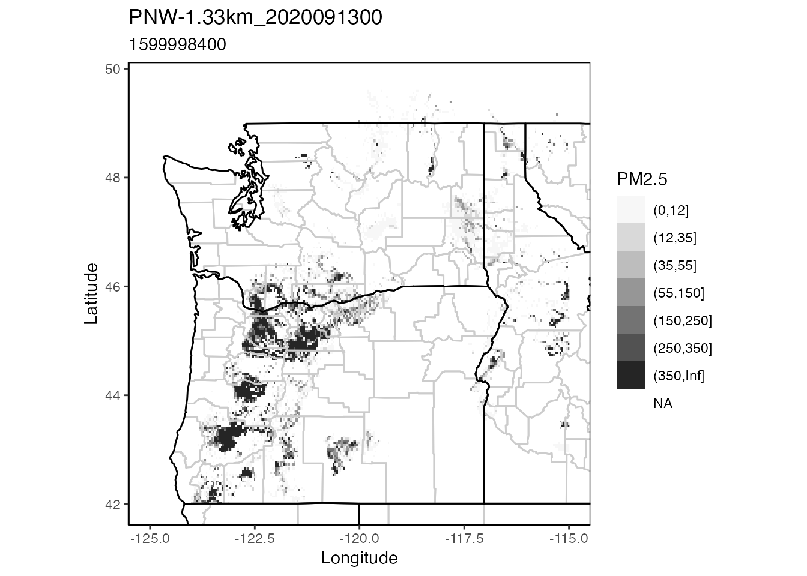

Introduction to AirFireModeling
Mazama Science
2021-03-12
AirFireModeling_Introduction.RmdOverview
The USFS Pacific Wildland Fire Sciences Lab AirFire team works to model wildland fire emissions and has created the BlueSky Modeling Framework. This system integrates a wide collection of models along the smoke modeling chain (fire information, fuel loadings, consumption modeling, emissions modeling, time rate of emissions modeling, plume height estimations, and smoke trajectory and dispersion modeling). The AirFireModeling package was created to make it easy to ingest and manipulate BluesSky model data in R. When combined with the PWFSLSmoke and MazamaSpatialUtils packages, this allowing direct comparison of model and regulatory monitoring data.
This article is meant to introduce AirFireModeling basic functionality, concepts, and terminology, and is not meant to be an exhaustive tutorial. The most important aspect of this package is its embrace of the incredibly full featured raster package which allows simple, mathematical style manipulation of Raster* objects (multi-dimensional gridded data bricks).
For more information on working with Raster* objects please see:
Preparation
library(PWFSLSmoke)
library(AirFireModeling)
# Spatial utils are required by the raster_toMonitor() function
library(MazamaSpatialUtils)
PWFSLSmoke::initializeMazamaSpatialUtils()
# Set the directory to download to and load models from
setModelDataDir('~/Data/BlueSky')Loading BlueSky models
The AirFireModeling package offers consistent and flexible model loading functions. The bluesky_load() function can be used to load data from a single model run. The return type will be a RasterBrick which can then be manipulated with the raster package.
The raster_load() function can be used to load output from multiple models and/or model initialization times at once. This function returns a list of RasterBrick objects.
Data are obtained from the data archive on haze.airfire.org. The very first time data is requested it is first downloaded to the directory specified with setModelDataDir() and then converted from the original NetCDF format into a v2 format that follows CF conventions. This allows the raster package to work with data in “delayed evaluation” mode, vastly improving performance.
All future times data is requested, it will be found in the modelDataDir, and immediately available.
Also note that the raster package allows us to only load data from the region of interest. Although full datasets are initially downloaded and converted, data loaded into memory will include only those grid cells that lie with the boundary set by xlim and ylim parameters in the ~_load() functions.
Below is an example of loading a model using the two functions:
# Single model and modelRun
raster <- raster_load(
modelName = 'PNW-1.33km',
modelRun = 2020091300,
xlim = c(-125, -115),
ylim = c(42, 50)
)
# Multiple models at once
rasterList <- raster_load(
modelName = c('PNW-1.33km', 'PNW-4km'),
modelRun = 2020091300,
xlim = c(-125, -115),
ylim = c(42, 50)
)Raster data types
When model is loaded, it takes the object type Raster*. Because BlueSky models are temporal in nature, each model has multiple layers (time slices) of gridded values, organized along a time axis. In the AirFireModeling package, each slice is called a RasterLayer object, or layer for short. Multiple layers together, such as when model runs are loaded, are called RasterBrick objects, or brick. Accessing a layer in a brick is effectively accessing a model-slice at a certain time. For example, to access the eleventh hour in an hourly updated model may look something like this: model[[11]].
Maps
Mapping is easy with the AirFireModeling raster_ggmap() function. The raster object passed in can be either a single RasterBrick or a list of them.
Single Map
A single map will be plotted for a single model.
# Create a map from a RasterBrick
raster_ggmap(
raster,
index = 12
)
Multiple Maps
A batch map will be plotted for a batch model.
# Create a map from a list of RasterBricks
raster_ggmap(
rasterList,
index = 12
)
# Could plot a single one with
#raster_ggmap(
# rasterList[[1]],
# index = 12
#)Working with monitoring data
Raster* objects are inherently spatial (and temporal) whereas regulatory monitors loaded via the PWFSLSmoke R package are primarily temporal. In order to compare a BlueSky model with monitoring data we must be able to convert between the two world views.
To help with this, the package has both raster_toMonitor() and monitor_toRaster() functions which allow conversion from model data to PWFSLSmoke ws_monitor objects and back again.
Raster to Monitor
The raster_toMonitor() function allows users to specify a longitude, latitude and radius and convert all model grid cells within that radius into PWFSLSmoke-compatible ws_monitor objects. These can then be used with any functions from the PWFSLSmoke or AirMonitorPlots packages.
model_Portland <- raster_toMonitor(
rasterList,
longitude = -122.68,
latitude = 45.52,
count = 15
)
PWFSLSmoke::monitor_timeseriesPlot(
model_Portland[[2]],
type = 'l', col = 'salmon'
)
title("15 Grid cells near Portland")
Converting model data to ws_monitor objects makes it easy to compare model and monitor data in the timeseries domain.
Monitor to Raster
The monitor_toRaster() function accepts a ws_monitor object and a Raster* object defining the grid. Grid cells where monitors exist are loaded with monitor values while all others cells are filled with NA values. The returned raster can then be mainuplated with other functions in the raster package.
Having monitor values defined on a specifc model grid also makes it easier to perform mathematical comparisons of model and monitor data in the spatial domain.
# All PWFSLSmoke monitors within 20 km of Portland, OR
Portland_monitors <-
monitor_load(
startdate = 2020091300,
enddate = 2020091523
) %>%
monitor_subsetByDistance(
longitude = -122.68,
latitude = 45.52,
radius = 24
)
# Create a Portland area RasterBrick
rasterList <- raster_load(
modelName = "PNW-4km",
modelRun = 2020091300,
xlim = c(-123.08, -122.28),
ylim = c(45.22, 45.92)
)
# Put monitor data on raster grid
Portland_rasterBrick <-
monitor_toRaster(
Portland_monitors,
rasterList[[1]]
)
# Leaflet map of monitors
PWFSLSmoke::monitor_leaflet(
ws_monitor = Portland_monitors
)
# Leaflet map of rasterized monitors
raster_leaflet(
raster = Portland_rasterBrick,
index = 12,
palette = "aqi",
direction = 1
)Conclusion
The AirFireModeling package is intended to simplify downloading, analyzing, and comparing spatio-temporal BlueSky Model and monitor data. The package focuses on harnessing the raster package for memory efficient exploration and analysis while providing a simple and consistent syntax.
Mazama Science